Introduction to iml: Interpretable Machine Learning in R
Code is from here
Machine learning models usually perform really well for predictions, but are not interpretable. The iml package provides tools for analysing any black box machine learning model:
Feature importance: Which were the most important features?
Feature effects: How does a feature influence the prediction? (Accumulated local effects, partial dependence plots and individual conditional expectation curves)
Explanations for single predictions: How did the feature values of a single data point affect its prediction? (LIME and Shapley value)
Surrogate trees: Can we approximate the underlying black box model with a short decision tree?
The iml package works for any classification and regression machine learning model: random forests, linear models, neural networks, xgboost, etc.
This document shows you how to use the iml package to analyse machine learning models.
If you want to learn more about the technical details of all the methods, read chapters from: https://christophm.github.io/interpretable-ml-book/agnostic.html
Data: Boston Housing
We’ll use the MASS::Boston dataset to demonstrate the abilities of the iml package. This dataset contains median house values from Boston neighbourhoods.
data("Boston", package = "MASS")
head(Boston)#> crim zn indus chas nox rm age dis rad tax ptratio black lstat
#> 1 0.00632 18 2.31 0 0.538 6.575 65.2 4.0900 1 296 15.3 396.90 4.98
#> 2 0.02731 0 7.07 0 0.469 6.421 78.9 4.9671 2 242 17.8 396.90 9.14
#> 3 0.02729 0 7.07 0 0.469 7.185 61.1 4.9671 2 242 17.8 392.83 4.03
#> 4 0.03237 0 2.18 0 0.458 6.998 45.8 6.0622 3 222 18.7 394.63 2.94
#> 5 0.06905 0 2.18 0 0.458 7.147 54.2 6.0622 3 222 18.7 396.90 5.33
#> 6 0.02985 0 2.18 0 0.458 6.430 58.7 6.0622 3 222 18.7 394.12 5.21
#> medv
#> 1 24.0
#> 2 21.6
#> 3 34.7
#> 4 33.4
#> 5 36.2
#> 6 28.7Fitting the machine learning model
First we train a randomForest to predict the Boston median housing value:
set.seed(42)
library("iml")
library("randomForest")
data("Boston", package = "MASS")
rf <- randomForest(medv ~ ., data = Boston, ntree = 50)Using the iml Predictor() container
We create a Predictor object, that holds the model and the data. The iml package uses R6 classes: New objects can be created by calling Predictor$new().
X <- Boston[which(names(Boston) != "medv")]
predictor <- Predictor$new(rf, data = X, y = Boston$medv)Feature importance
We can measure how important each feature was for the predictions with FeatureImp. The feature importance measure works by shuffling each feature and measuring how much the performance drops. For this regression task we choose to measure the loss in performance with the mean absolute error (‘mae’), another choice would be the mean squared error (‘mse’).
Once we create a new object of FeatureImp, the importance is automatically computed. We can call the plot() function of the object or look at the results in a data.frame.
imp <- FeatureImp$new(predictor, loss = "mae")
library("ggplot2")
plot(imp)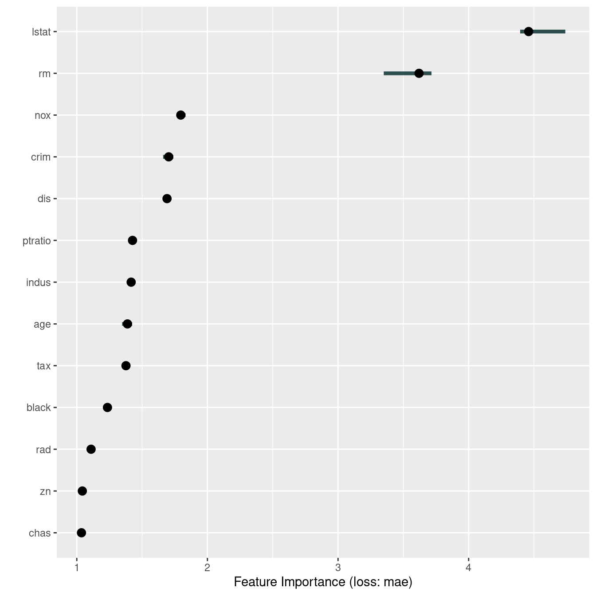
imp$results#> feature importance.05 importance importance.95 permutation.error
#> 1 lstat 4.394480 4.459282 4.740041 4.394662
#> 2 rm 3.349928 3.620192 3.715445 3.567732
#> 3 nox 1.772047 1.796058 1.833039 1.770032
#> 4 crim 1.661024 1.703701 1.738660 1.679013
#> 5 dis 1.670726 1.690742 1.694655 1.666242
#> 6 ptratio 1.423169 1.426636 1.443533 1.405963
#> 7 indus 1.399432 1.416183 1.434735 1.395661
#> 8 age 1.346887 1.387961 1.423804 1.367848
#> 9 tax 1.352382 1.376506 1.384641 1.356559
#> 10 black 1.227135 1.234735 1.235719 1.216842
#> 11 rad 1.097253 1.109357 1.131675 1.093281
#> 12 zn 1.035018 1.042360 1.043935 1.027256
#> 13 chas 1.032211 1.035745 1.047224 1.020736Feature effects
Besides knowing which features were important, we are interested in how the features influence the predicted outcome. The FeatureEffect class implements accumulated local effect plots, partial dependence plots and individual conditional expectation curves. The following plot shows the accumulated local effects (ALE) for the feature ‘lstat’. ALE shows how the prediction changes locally, when the feature is varied. The marks on the x-axis indicates the distribution of the ‘lstat’ feature, showing how relevant a region is for interpretation (little or no points mean that we should not over-interpret this region).
ale <- FeatureEffect$new(predictor, feature = "lstat")
ale$plot()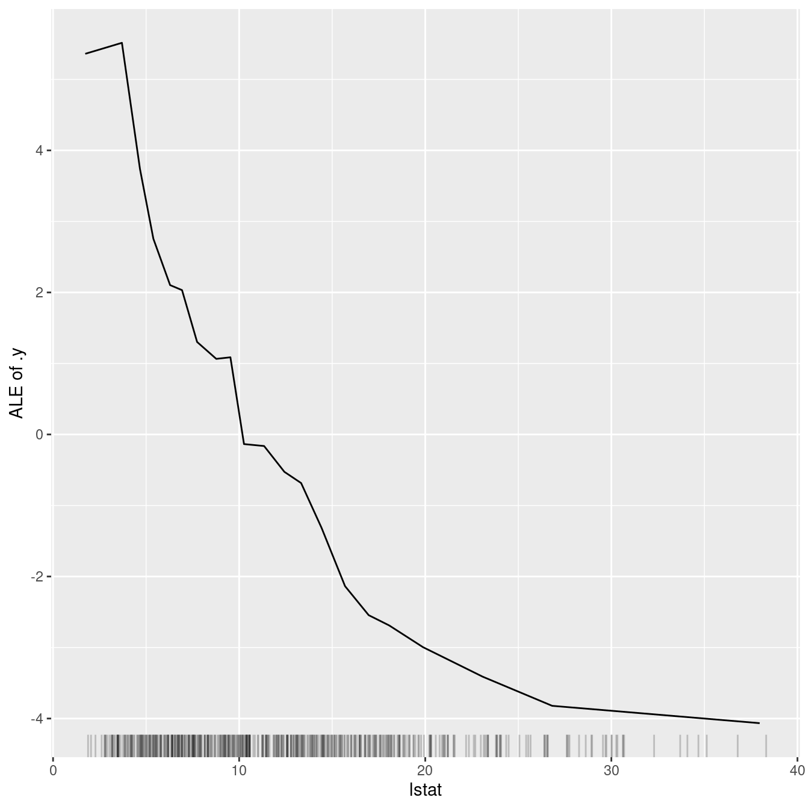
If we want to compute the partial dependence curves on another feature, we can simply reset the feature:
ale$set.feature("rm")
ale$plot()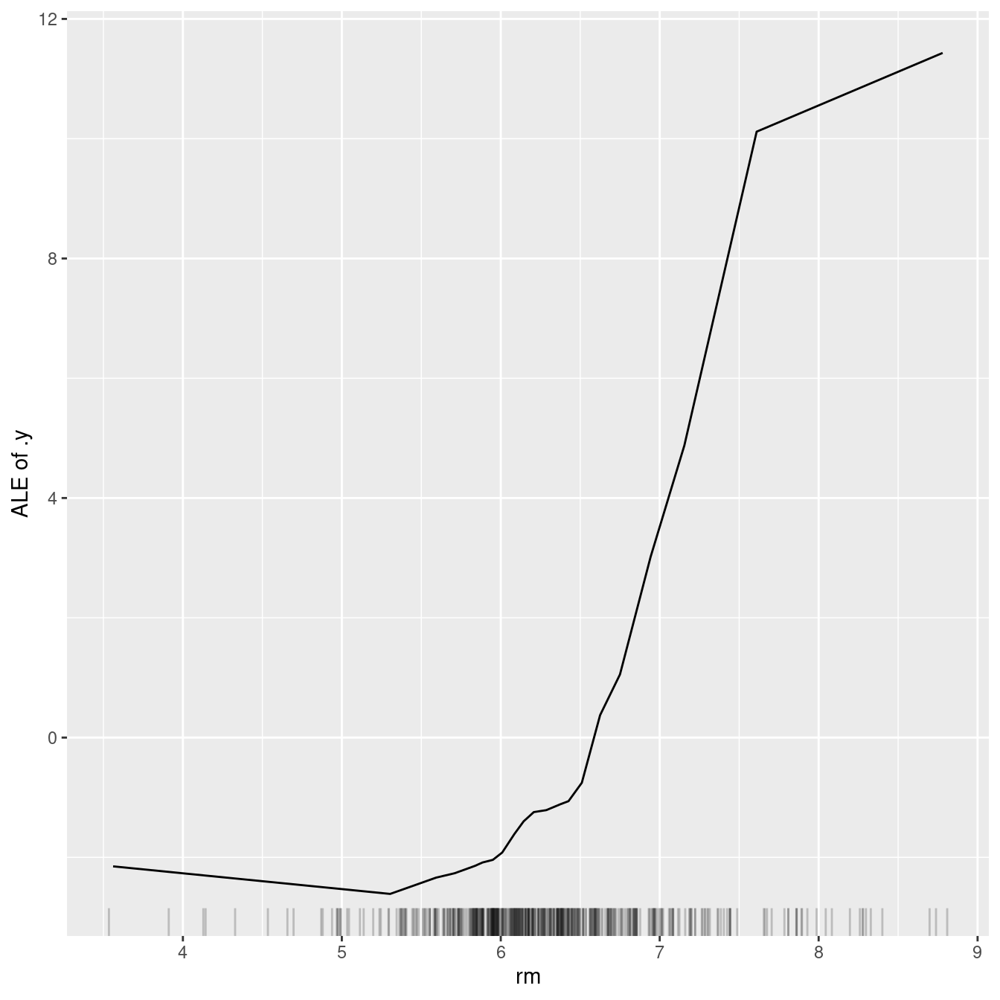
Measure interactions
We can also measure how strongly features interact with each other. The interaction measure regards how much of the variance of \(f(x)\) is explained by the interaction. The measure is between 0 (no interaction) and 1 (= 100% of variance of \(f(x)\) due to interactions). For each feature, we measure how much they interact with any other feature:
interact <- Interaction$new(predictor)#>
#> Attaching package: 'withr'#> The following objects are masked from 'package:rlang':
#>
#> local_options, with_options#> The following object is masked from 'package:tools':
#>
#> makevars_userplot(interact)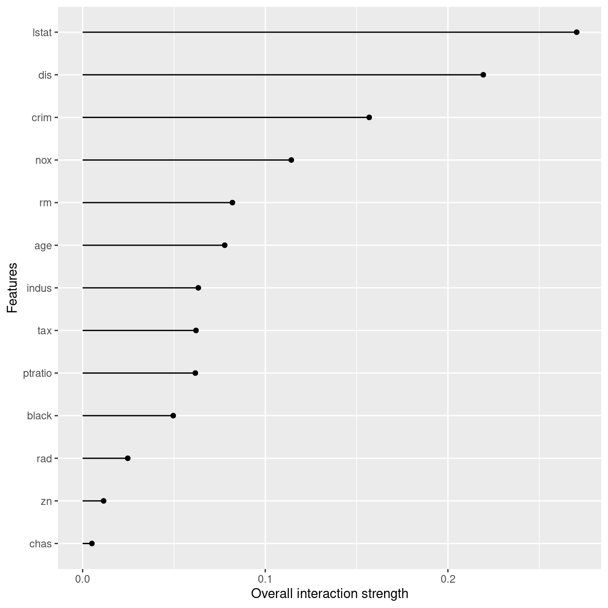
We can also specify a feature and measure all it’s 2-way interactions with all other features:
interact <- Interaction$new(predictor, feature = "crim")
plot(interact)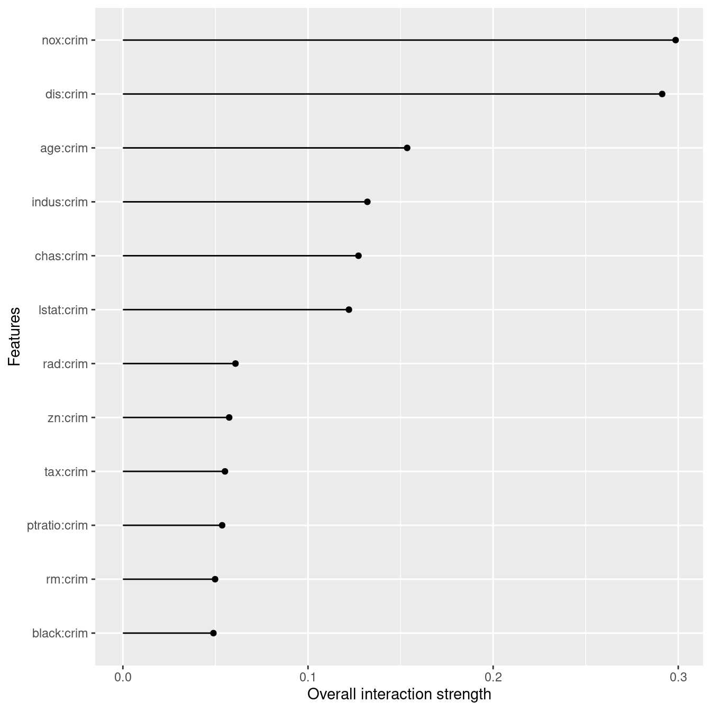
You can also plot the feature effects for all features at once:
effs <- FeatureEffects$new(predictor)
plot(effs)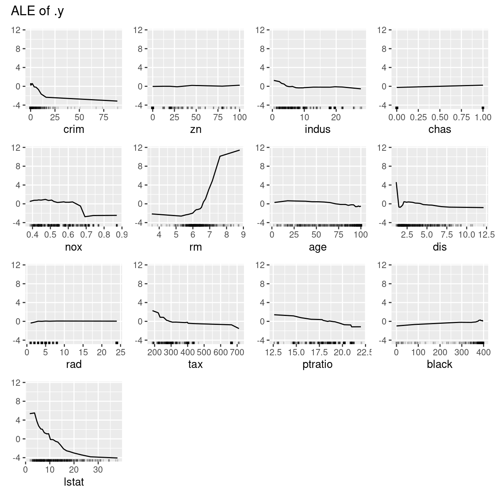
Surrogate model
Another way to make the models more interpretable is to replace the black box with a simpler model - a decision tree. We take the predictions of the black box model (in our case the random forest) and train a decision tree on the original features and the predicted outcome. The plot shows the terminal nodes of the fitted tree. The maxdepth parameter controls how deep the tree can grow and therefore how interpretable it is.
tree <- TreeSurrogate$new(predictor, maxdepth = 2)#> Loading required package: partykit#> Loading required package: libcoin#> Loading required package: mvtnormplot(tree)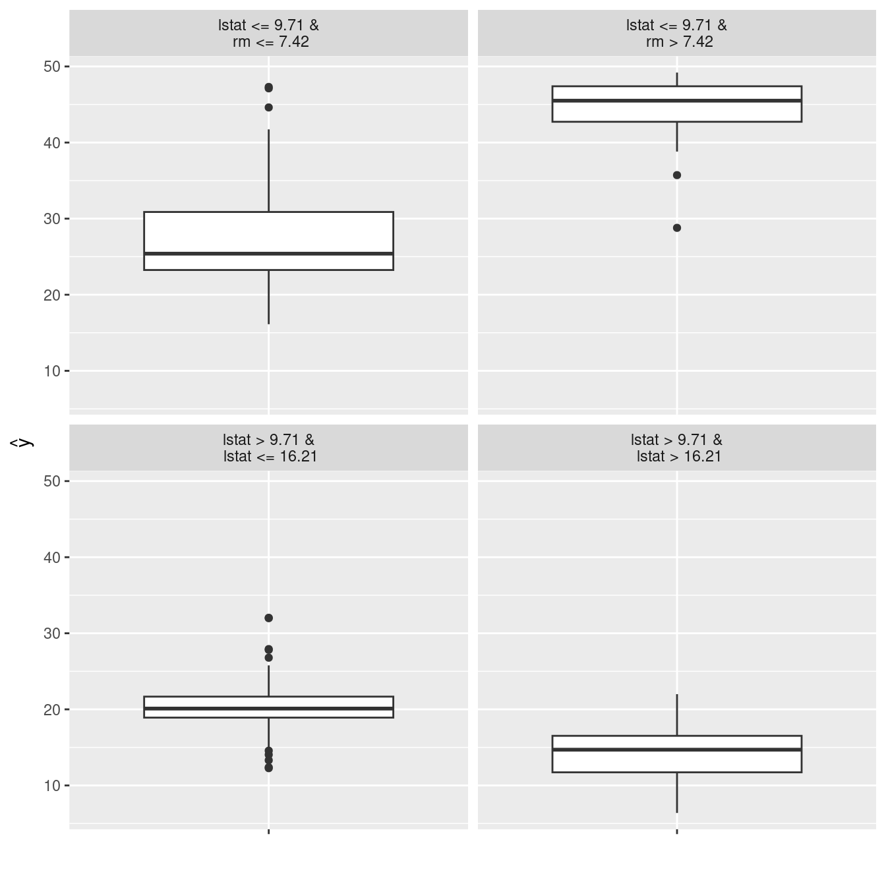
We can use the tree to make predictions:
head(tree$predict(Boston))#> Warning in self$predictor$data$match_cols(data.frame(newdata)): Dropping
#> additional columns: medv#> .y.hat
#> 1 27.09989
#> 2 27.09989
#> 3 27.09989
#> 4 27.09989
#> 5 27.09989
#> 6 27.09989Explain single predictions with a local model
Global surrogate model can improve the understanding of the global model behaviour. We can also fit a model locally to understand an individual prediction better. The local model fitted by LocalModel is a linear regression model and the data points are weighted by how close they are to the data point for wich we want to explain the prediction.
lime.explain <- LocalModel$new(predictor, x.interest = X[1, ])#> Loading required package: glmnet#> Loading required package: Matrix#> Loaded glmnet 4.1-6#> Loading required package: gowerlime.explain$results#> beta x.recoded effect x.original feature feature.value
#> rm 4.4836483 6.575 29.479987 6.575 rm rm=6.575
#> ptratio -0.5244767 15.300 -8.024493 15.3 ptratio ptratio=15.3
#> lstat -0.4348698 4.980 -2.165652 4.98 lstat lstat=4.98plot(lime.explain)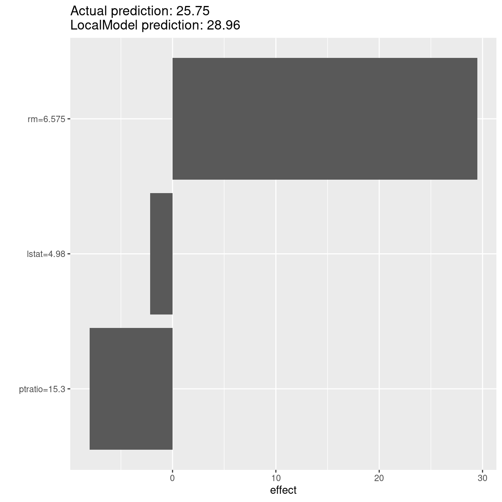
lime.explain$explain(X[2, ])
plot(lime.explain)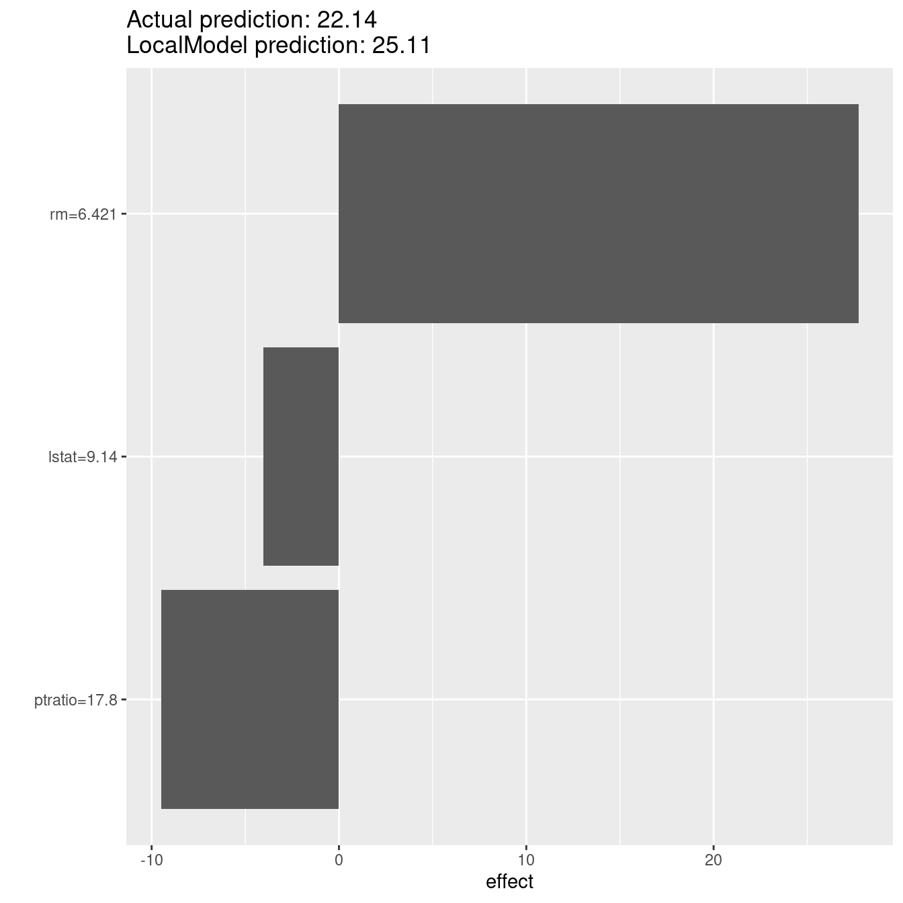
Explain single predictions with game theory
An alternative for explaining individual predictions is a method from coalitional game theory named Shapley value. Assume that for one data point, the feature values play a game together, in which they get the prediction as a payout. The Shapley value tells us how to fairly distribute the payout among the feature values.
shapley <- Shapley$new(predictor, x.interest = X[1, ])
shapley$plot()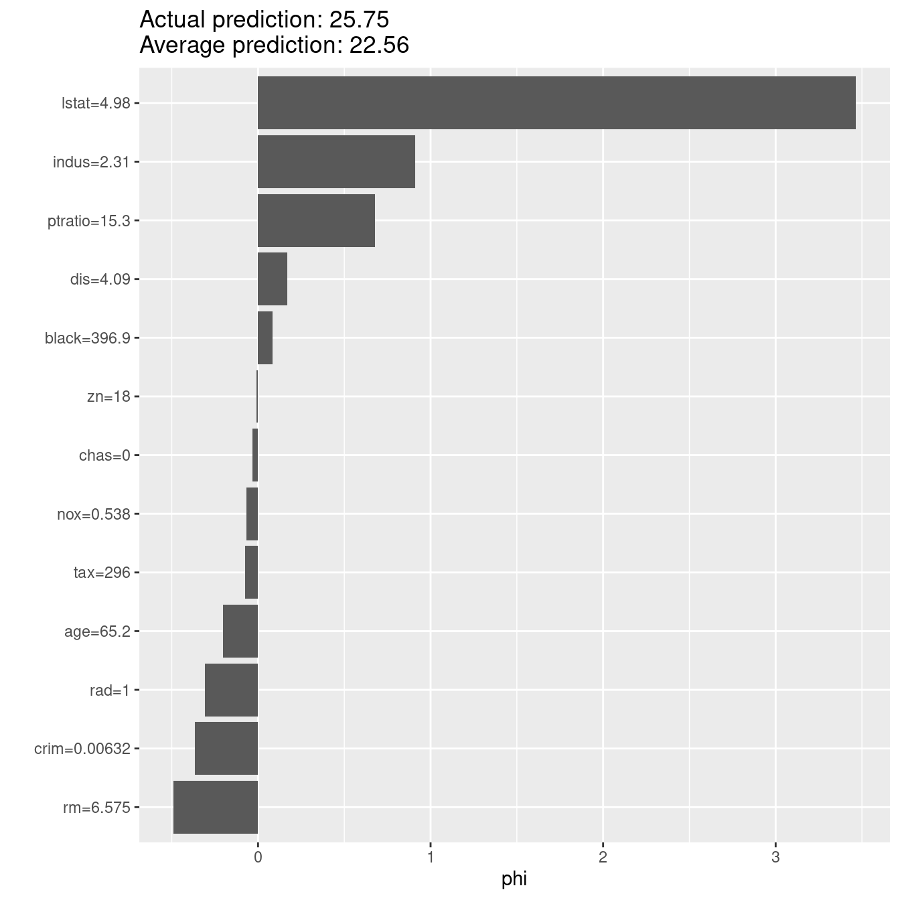
We can reuse the object to explain other data points:
shapley$explain(x.interest = X[2, ])
shapley$plot()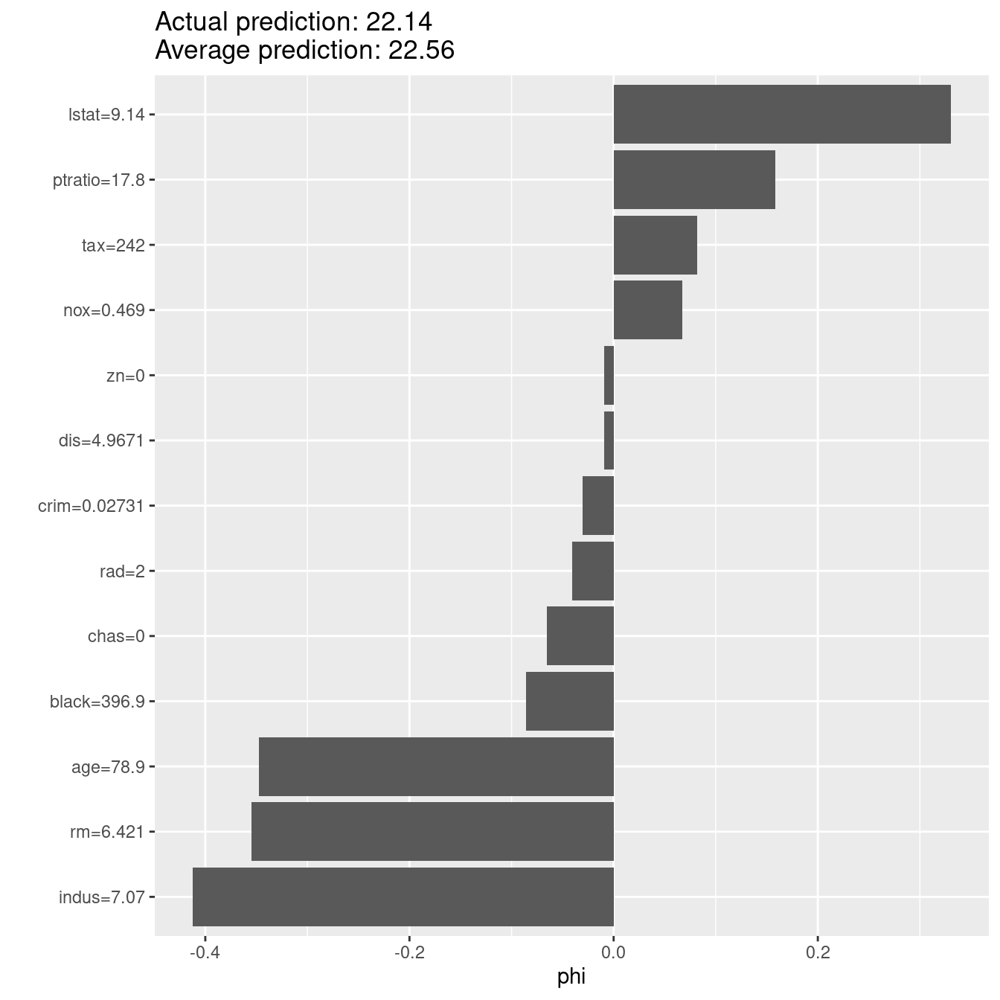
The results in data.frame form can be extracted like this:
results <- shapley$results
head(results)#> feature phi phi.var feature.value
#> 1 crim -0.030772464 0.88726982 crim=0.02731
#> 2 zn -0.009163333 0.01266404 zn=0
#> 3 indus -0.412309000 0.65608174 indus=7.07
#> 4 chas -0.065604772 0.04865024 chas=0
#> 5 nox 0.067133048 0.37635155 nox=0.469
#> 6 rm -0.354769984 7.26420349 rm=6.421